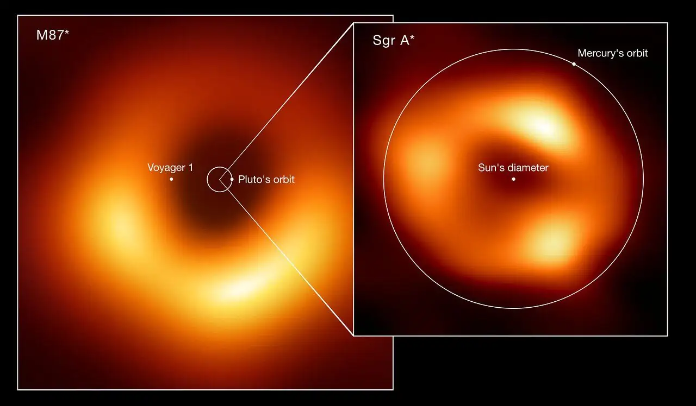

SAGITTARIUS A*
Sagittarius A* lies in the centre of the Milky Way 26,000 lightyears away from Earth and can be seen in the night sky as part of the Sagittarius constellation. Despite being four million times more massive than our Sun, Sagittarius A* is still about 1000 times smaller than the M87 supermassive black hole.More than 300 astronomers, and hundreds of engineers and support staff from 60 institutions across 20 countries and regions, processed data from a 2017 observation of Sagittarius A*. Referred to as an “Earth-sized telescope,” the EHT links together 11 telescopes around the world, effectively creating one telescope with a mirror the size of the Earth. The EHT detects radio frequencies to create the image of Sagittarius A*. The bright orange ring in the image is the matter swirling around the black hole, and the dark shadow in the middle is the black hole itself. “While the Earth is rotating, all telescopes observe the same astronomical object for several hours,” explains Thomas P Krichbaum, of Germany’s Max Planck Institute, at a press conference to announce the findings. “At each telescope, the data are recorded on hard disks and are accurately time tagged by precise atomic clocks. After observations, the data are shipped to processing centres where they are combined in supercomputers. “After a number of quite complex data analysis steps, this results in the high-resolution image of the radio source.” Though captured at the same time, the image of Sagittarius A* took longer to complete than the image of M87*. This is because Sagittarius A* is constantly changing with matter orbiting it in a matter of minutes. Comparatively, matter orbits M87* over the course of days. So, imaging Sagittarius A* clearly is not easy work.
